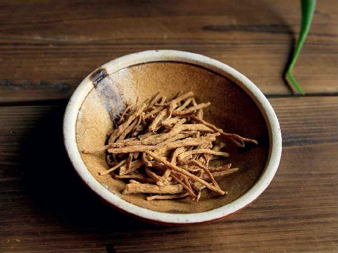
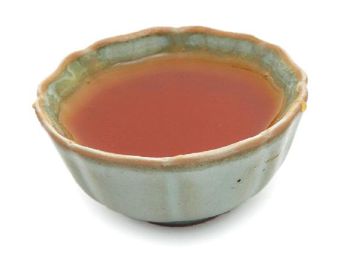
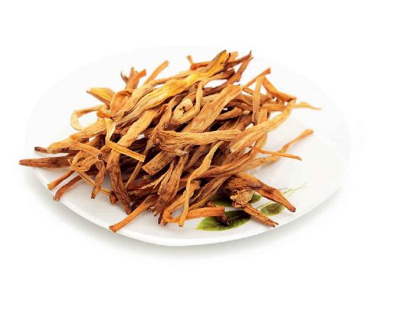
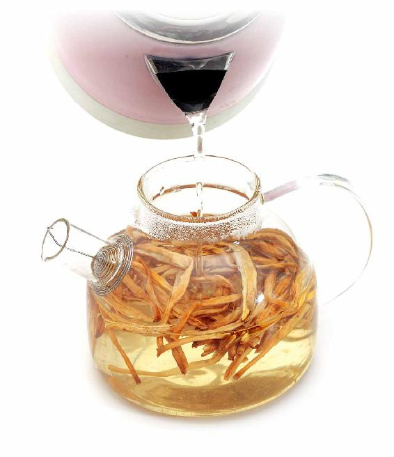
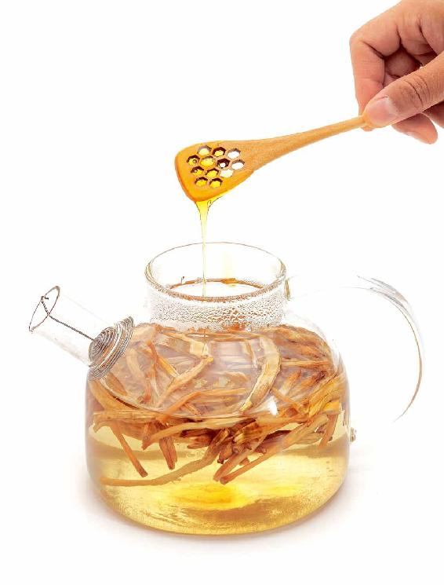
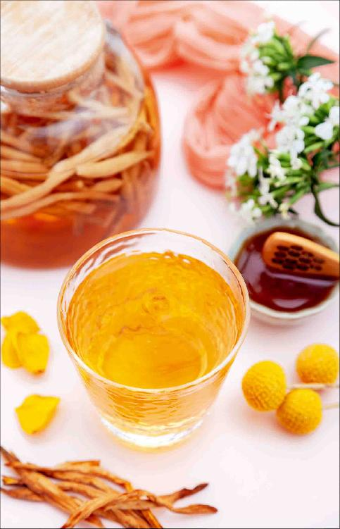

母亲节，在每年5月的第二个星期日，这个节日被世界上大多数国家的人接受，如今已经变成了一个国际性的盛大节日。不管国家的分歧、种族的差异有多大，全世界的人对母亲的感情都是相通的，我们不在乎母亲节是从哪里起源的，最重要的是我们可以借此机会来表达对母亲的爱和敬意。
母亲节那天，大家都喜欢送母亲鲜花，外国人送的是康乃馨，这个习俗其实只有100年的历史。我们中国人有自己的母亲花——萱草花，母亲花（萱草花）在中国传统文化中已经盛行了几千年。
萱草是在春天长叶，夏天开花。初夏时节，风和日丽，萱草花就会应时而开。
小时候，我们都读过唐代诗人孟郊写的一首颂母诗：

在诗中， “寸草”指萱草，三春即春天的三个月——孟春、仲春和季春。
诗人将母亲对孩子的关爱比作春天的阳光，经过春天三个月的阳光滋养，萱草在初夏的时候开出了灿烂的花朵，替远方的游子为母亲解忧疗愁。
古人把萱草花称为忘忧花，因为它有解忧郁的功效。所以古人在出门远行前，都要在母亲住的北堂（古人把母亲居住的房屋称为北堂）前种下萱草，“萱草生堂阶，游子行天涯”，希望母亲看到孩儿亲手种下的萱草，能够开心、忘忧。
萱草有不同品种。古人用来解忧的萱草，是黄花萱草，它的花晒干以后就是我们平时吃的黄花菜，也叫作金针菜。黄花菜就是我们说的解忧药，能煲汤、做菜，味道很鲜美。它也能入药，可以预防皮肤松弛；还可以解气郁、止疼痛、降血脂，让人心情平和，忘记忧愁；还能调理更年期症状。对于母亲来说，真的是一味好药。
黄花菜有一点凉性，如果您母亲是肠胃不太好的人，就不要把它当成菜来多吃。
但我们还有一种方法：可以当茶饮用，母亲节到了，您可以给妈妈泡一杯萱草忘忧茶。
喝萱草忘忧茶有什么效果呢？
第一，可以预防老年智力衰退，因为它有健脑的作用。
第二，可以降血脂，对于心脏有保健作用。
第三，可以增强皮肤的韧性和弹力，预防皮肤衰老。
第四，有消炎、解毒的作用。
萱草理气止痛、通便秘，老年人由于气虚引起的便秘，可以适当吃一些萱草。
对于更年期的妈妈来说，不妨给她经常吃一些黄花菜，或者奉上一杯萱草忘忧茶。
原料：黄花菜25克，冰糖2粒或蜂蜜适量。


做法：
把黄花菜、冰糖或蜂蜜放入杯中，用沸水冲泡，闷泡20分钟后就可以喝了。可以反复冲泡两次。



第一，如果是哮喘发作期间不要吃黄花菜。
第二，一定要记住，黄花菜只能用晒干的，新鲜的黄花菜是绝不可以直接食用的。因为新鲜的黄花菜含有刺激性的毒素，必须经过晒干才能消除。
另外，公园里作为观赏用的萱草花，不要随便去采摘，因为观赏用的萱草花的品种很多，它们都不是平时吃的黄花菜。
萱草忘忧茶或者黄花菜，并不仅仅在初夏才能吃，它们是一年四季都可以用的。
因为它的作用很平和，所以要长期食用才有效果。
虽然母亲节只有一天，但是我们对于母亲的关爱和照顾是一年四季不会间断的。在母亲节的这一天，我也想借此机会送给我母亲一首诗，那就是元代诗人、画家王冕因思念他母亲而作的《墨萱图》：
祝母亲母亲节快乐！也祝天下所有的母亲节日快乐！
读者评论： 今朝风日好，堂前萱草花
一丹_k：“今朝风日好，堂前萱草花。持杯为母寿，所喜无喧哗。”给妈妈用黄花菜煲了汤，希望所有的妈妈都身体健康！
Janevery：祝天下的母亲健康快乐！中国的母亲花是萱草花，还真不知道，而且还是黄花菜！记得以前在家里吃饭，妈妈经常做黄花菜汤给我们喝,太爱我的妈妈了，感恩！现在轮到我煲汤给我母亲喝,希望她健健康康、开开心心！“今朝风日好，堂前萱草花。”
飞儿：听到老师献给母亲的诗很感动!老师也是一位非常伟大的母亲!祝所有母亲天天快乐无忧!黄花菜真是非常棒的食材呀!
开心果果的麻麻：女子本弱，为母则刚，养儿方知父母恩！当了妈妈之后才懂得父母养育的恩情，我的妈妈每天帮我带两个宝贝，让我安心工作，每次外出她也会帮我抱孩子，这样的恩情不知该如何表达，我爱我的妈妈！
海燕：萱草忘忧茶口感好，还养生，真不错。
寒梅：我正好处在更年期，忘忧茶真是太及时了，大爱老师。